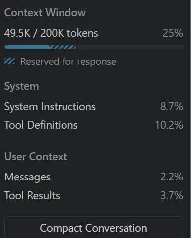
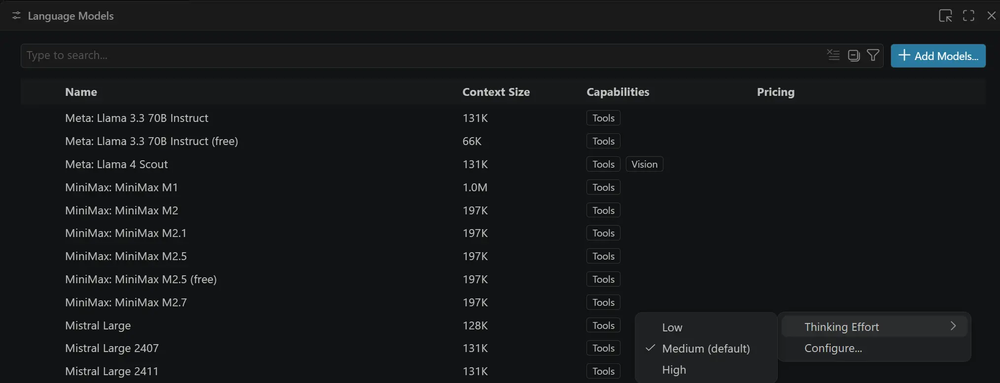
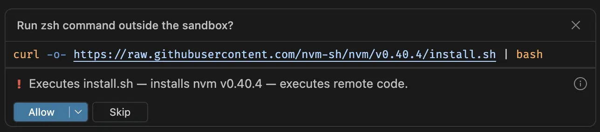
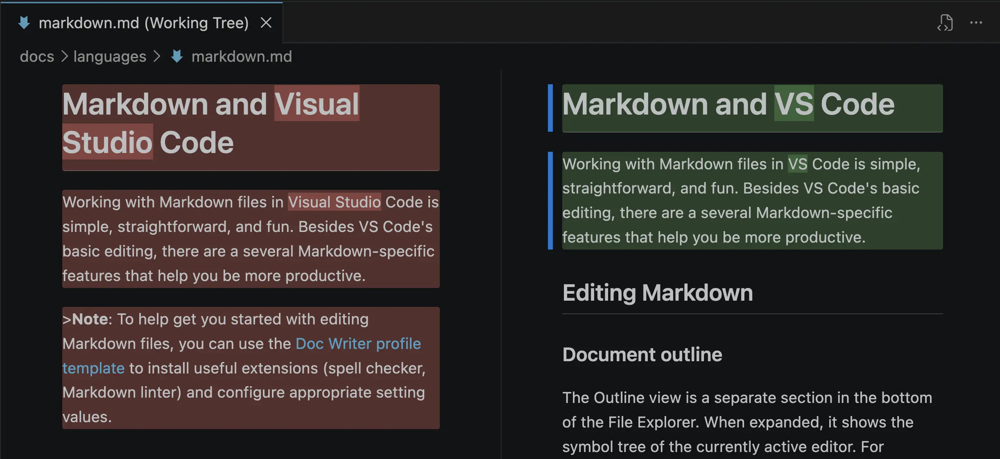
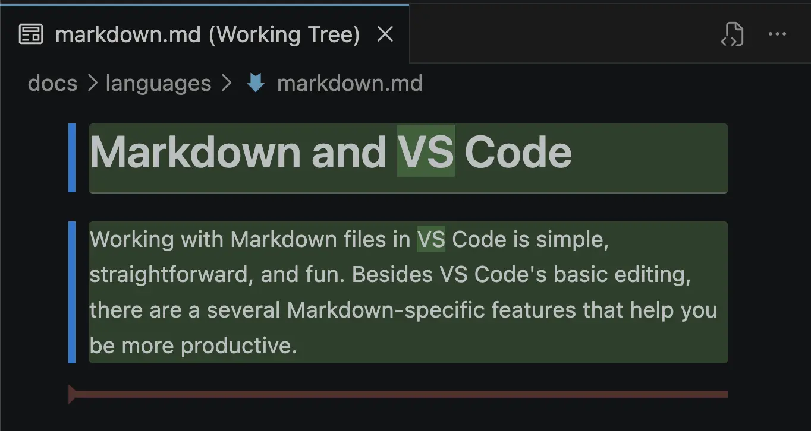
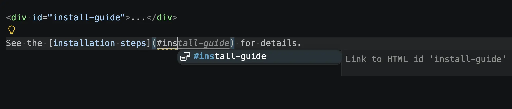
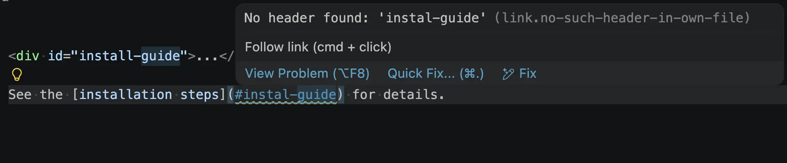

Visual Studio Code 1.120
_发布日期：2026年5月13日_
欢迎来到 Visual Studio Code 1.120 版本。此版本将代理（Agents）窗口推向稳定版，改进了自带密钥（BYOK）模型的可见性和控制，并添加了 Markdown 体验改进和代理安全功能。以下是此版本的亮点：
- 稳定版代理窗口：使用新的代理窗口，以代理优先的方式跨所有项目工作。
- BYOK 改进：跟踪和优化令牌使用量，并为 BYOK 模型配置思考力度。
- Markdown 改进：使用 Markdown 预览进行差异对比，审查 Markdown 内容而非语法。
- 命令风险评估：在运行终端命令之前评估其风险。
- 令牌优化：通过压缩大型终端输出来减少上下文窗口占用。
编程愉快！
代理
跨项目编排任务，使用代理窗口（预览版）
虽然 VS Code 已被数百万开发者用于代理式编程，但其编辑器布局主要针对单任务、单工作区工作流进行了优化。为了让我们的用户（以及我们自己！）能够跨多个项目使用多个代理，我们创建了一种新的窗口类型：代理窗口。
新的代理窗口是您已熟悉的编辑器的伴侣：专为代理驱动的开发而设计，提供一个专用空间来探索、迭代和审查跨多个项目的任务，并在它们之间无缝切换。由于 VS Code 是为开发者的选择性和灵活性而构建的，代理窗口允许您选择自己的代理框架、在远程机器上运行代理，并以您想要的方式配置环境——包括颜色主题、快捷键和扩展。
代理窗口在过去几个版本的 VS Code Insiders 中已提供，而在此版本中，它现在作为预览功能在 VS Code 稳定版中提供。
您可以通过多种方式打开代理窗口，包括 VS Code 标题栏中的"在代理中打开"按钮。要了解有关其工作原理和可执行操作的更多信息，请访问代理窗口文档。
有什么新功能？
如果您已经在 Insiders 中使用代理窗口，谢谢您！我们根据您的反馈持续改进，本周推出了以下改进：
- 偏好设置跨新会话保留：您在代理框架和隔离模式等下拉菜单中的上一次选择会在创建新会话时保留。
- 更轻松地放弃更改：您可以直接从"更改"面板放弃编辑。
- 在新会话中同步上游更改：文件面板上的同步按钮可让您查看来自基础分支的上游更改，并在代理开始工作之前将其拉取。
- 更具确定性的更改交互：更改面板中的操作现在更快完成，因为它们是确定性的。
- 已完成会话默认查看所有更改：当您打开标记为已完成的会话时，您会自动获得代理所有编辑的概览视图。
- 在最近的会话之间导航：使用标题栏左上角的箭头按钮在最近的会话之间跳转，无需离开窗口。
- 按窗口覆盖设置：代理窗口现在共享您的所有 VS Code 设置，当您希望在那里有不同行为时，可以专门为代理窗口覆盖特定设置。
您的反馈持续对代理功能的塑造起到巨大帮助。请在 GitHub 上提交问题或浏览现有问题。
扩展性
仅提供静态内容的扩展（如主题、语法、语言和快捷键）会自动在代理窗口中激活。我们还测试了排名前 100 的市场扩展，其中一些在安装在您的默认 VS Code 配置文件时也会激活。
对于其他扩展，您可以通过 ID 使用 setting(extensions.supportAgentsWindow) 设置来选择启用。您以这种方式启用的任何扩展都需要安装在您的默认 VS Code 配置文件中。
"extensions.supportAgentsWindow": {
"myextension.id": true
}虽然我们仍在完善更广泛的扩展方案，但我们希望与扩展作者合作，探讨在代理窗口中启用扩展能解锁哪些功能，以及各种扩展应如何在此环境中运行。无论您是想要构想利用跨项目运行代理的新场景，还是分享现有扩展在代理窗口中的行为反馈，我们都非常乐意通过 GitHub 问题 与您合作。
自动发现 Copilot CLI 插件
通过 GitHub Copilot CLI 安装的代理插件会被 VS Code 自动获取，因此只需一次 copilot plugin install 即可覆盖两个界面。之前，您需要在 VS Code 中单独安装相同的插件，或将其路径添加到 setting(chat.plugins.paths) 中。
语言模型
通过自带密钥（BYOK），您可以使用来自 Anthropic、OpenAI 等提供商的自己的 API 密钥，以利用自己的计费或模型托管选项。要了解更多信息，请参阅 BYOK 文档。
查看 BYOK 模型令牌使用量
管理模型的上下文窗口是获得良好结果和控制成本的关键。模型可能会丢失对话中的重要细节，而令牌使用量会增加成本。此版本为 BYOK 模型的令牌使用量带来了更好的可见性，让您可以关注上下文窗口。
之前，当您使用通过自己的 API 密钥（Anthropic、OpenAI 或其他）带入的模型聊天时，控件始终显示 0% 和零令牌计数，因为令牌统计仅适用于内置模型。
现在，聊天视图中的上下文窗口控件会显示 BYOK 模型的准确令牌使用量和百分比填充率。

为 BYOK 推理模型配置思考力度
支持推理的语言模型允许您配置其"思考力度"，这是在回复质量和速度/成本之间进行权衡的方式。您可以在思考力度文档中了解更多信息。
在此版本中，您现在可以直接从聊天视图的模型选择器中为 BYOK 推理模型配置思考力度。所选力度会在每次请求时转发给模型，让您可以在延迟和成本与回答质量之间进行权衡。

适用于：通过 OpenAI 兼容端点提供服务的自带密钥（BYOK）推理模型（OpenAI、xAI (Grok)、OpenRouter 以及自定义 OpenAI / Azure OpenAI 部署）。Anthropic 模型已经支持此功能；现在控件在各提供商之间保持一致。
按提供商组织的模型选择器
聊天视图中的模型选择器现在按提供商对模型进行分组，当您可以使用来自多个来源的模型时，更容易找到所需的模型。您还可以按名称搜索模型。
最近使用的模型现在在模型名称旁边以灰色文本显示提供商名称，因此您可以快速区分来自不同提供商的名称相似的模型。
[!TIP]
您可以通过在聊天输入中键入 /models 来快速访问模型。
聊天
终端工具输出压缩（预览版）
设置：setting(chat.tools.compressOutput.enabled)
来自 git diff、ls -l 和 npm install 等命令的长终端输出会占用模型上下文窗口的大量空间，从而减少留给代码和代理推理的空间。
当您启用 setting(chat.tools.compressOutput.enabled) 设置时，VS Code 会在将这些命令的输出发送给模型之前进行后处理。差异中未更改的大块内容会被折叠，锁定文件和快照差异会被丢弃，ls -l 被缩减为条目名称，而 npm install 的进度条、弃用警告和审计摘要会被剥离。
任何被压缩的输出都会被添加一条简短的横幅，以便模型可以看到哪些过滤器被触发以及如何在需要原始文本时禁用压缩。
终端命令风险评估（实验性功能）
设置：setting(chat.tools.riskAssessment.enabled)
为了帮助您快速判断某个命令是否值得仔细检查，终端命令确认现在包含一个风险徽章，并附有 AI 生成的命令功能说明。
每个徽章显示三个级别之一，以及针对特定命令量身定制的一句话摘要：
- 安全（绿色）：读取文件或打印输出，不进行更改。
- 注意（橙色）：修改工作区、安装软件包或通过网络发送数据。
- 仔细审查（红色）：执行可能难以或无法撤销的操作，例如强制推送到远程仓库或删除工作区外的文件。

Claude 和 Copilot CLI 的计划模式控件
设置：setting(chat.planWidget.inlineEditor.enabled)
当您在使用 Claude 代理或 Copilot CLI 时使用计划模式，VS Code 会显示一个内联计划控件，让您在代理开始执行之前审查和调整计划。此版本对此流程进行了多项改进：
- 内联编辑计划：编辑计划现在在控件内部的内联编辑器中进行，而不是打开单独的编辑器标签页，因此您可以在不失去上下文的情况下迭代计划。
- 更清晰的反馈模式：当您对计划提供反馈时，控件会显示更清晰的指示，表明您处于反馈模式，并显示您到目前为止添加的反馈。
- 禁用内联编辑器：通过配置
setting(chat.planWidget.inlineEditor.enabled)设置，选择退出内联编辑体验并回退到在常规编辑器标签页中编辑。语言
Markdown 差异预览（预览版）
当您从源代码管理视图打开 Markdown 文件时，可以使用 VS Code 渲染的 Markdown 预览来查看差异，而不是原始源代码。

这使得发现有意义的更改变得更加容易，例如更新的标题、新章节、修改的图片或重组后的列表，而无需逐行解析 Markdown 语法。
差异 Markdown 预览支持并排差异视图和内联视图。

要试用，请从源代码管理（或任何其他差异编辑器）打开 Markdown 差异，并使用 使用其他编辑器重新打开... 切换到 Markdown 预览差异视图。您还可以使用 setting(workbench.diffEditorAssociations) 设置默认在 Markdown 预览中打开差异：
"workbench.diffEditorAssociations": {
"*.md": "vscode.markdown.preview.editor"
}此功能仍为预览版，因此您可能会遇到问题。我们认为它对于审查代理或拉取请求中的文档更改特别有用。
Markdown 预览默认更改
VS Code 内置的 Markdown 预览已经存在一段时间了，其中一些原始功能不再像以前那样必要。在此迭代中，我们决定默认禁用其中两个功能：
setting(markdown.preview.doubleClickToSwitchToEditor)：在预览中双击切换回源编辑器。用户经常感到困惑，因为他们想使用双击来进行选择。我们现在有诸如使用其他编辑器重新打开之类的功能，在很大程度上取代了此功能。setting(markdown.preview.markEditorSelection)：标记编辑器中当前选中的行。我们认为这对现代工作流不太有用。
如果您更喜欢以前的行为，可以重新启用这些设置。
Markdown 路径补全和验证支持 HTML ID
我们内置的 Markdown 路径补全和链接验证现在能识别 Markdown 文件中 HTML 元素的 id 属性。
<div id="install-guide">...</div>
查看 [安装步骤](#install-guide) 了解详情。这些 ID 的链接现在会在补全中建议：

它们还被用于链接验证：

Markdown 表格的智能选择
Markdown 表格现在支持基本的智能选择。使用 扩展选择 (kb(editor.action.smartSelect.expand)) 将选择从单元格扩展到其行，再到整个表格，使用 缩小选择 (kb(editor.action.smartSelect.shrink)) 逐步缩小回来。
提议的 API
自定义编辑器差异
新的 customEditorDiffs 提议 API 允许自定义编辑器使用专用的差异 UI 渲染差异。这正是为新的 Markdown 预览差异视图 提供支持的功能，它为底层源代码的文本差异不实用的情况开启了更好的比较体验。
自定义编辑器提供程序可以通过在 CustomReadonlyEditorProvider 或 CustomTextEditorProvider 上实现以下一个或两个方法来选择加入：
resolveCustomEditorInlineDiff(documents, webviewPanel, token)：在单个 webview 中渲染差异，原始文档和修改后的文档都可供扩展使用。resolveCustomEditorSideBySideDiff(documents, webviewPanels, token)：使用两个 webview 渲染差异，每侧一个，由 VS Code 协调布局和滚动同步。
结合 diffEditorPriority，扩展现在可以完全控制其自定义编辑器是否处理差异以及如何呈现这些差异。请参阅 issue #138525 以跟进并提供反馈。
分离自定义编辑器优先级：差异与合并
自定义编辑器扩展现在可以为编辑、差异和合并文件类型设置不同的默认优先级。customEditors 贡献接受两个新的可选字段 diffEditorPriority 和 mergeEditorPriority，与现有的 priority 并列。
"contributes": {
"customEditors": [
{
"viewType": "myExtension.editor",
"displayName": "我的自定义编辑器",
"selector": [
{ "filenamePattern": "*.custom" }
],
"priority": "default",
"diffEditorPriority": "option",
"mergeEditorPriority": "option"
}
]
}上述贡献使打开 *.custom 文件时使用自定义编辑器，但从源代码管理打开差异时使用普通的文本差异视图。
此 API 仍为提议阶段。请试用并在 issue #292379 中分享反馈。
文档差异
新的 documentDiff 提议 API 通过 workspace.getTextDiff(original, modified, options?) 将 VS Code 的内置差异算法暴露给扩展。它返回一个流式异步可迭代对象（包含行级更改）以及一个 complete Promise（包含摘要信息：是否相同、可能不完整以及可选的动作检测）。每个更改都包含内部字符级范围。
这对于自定义差异编辑器尤其有用（参见自定义编辑器差异），这样它们可以渲染与内置编辑器完全相同的差异，而不必附带自己的算法。
const diff = vscode.workspace.getTextDiff(originalDoc, modifiedDoc, {
ignoreTrimWhitespace: true,
computeMoves: false,
});
for await (const change of diff.changes) {
// change.originalRange, change.modifiedRange, change.innerChanges
}
const { identical, mayBeIncomplete, moves } = await diff.complete;请在 issue #315174 中跟踪进度并提供反馈。
对扩展的贡献
GitHub Pull Requests
GitHub Pull Requests 扩展取得了更多进展，该扩展使您能够处理、创建和管理拉取请求和问题。新功能包括：
- 通过复制/粘贴和上传按钮将图片上传到拉取请求评论。
- 在工作树中检出拉取请求时使用更具描述性的文件夹名称。
"githubIssues.issueBranchTitle"现在支持${issueType}模板变量。
请查看扩展 0.144.0 版本更新日志，了解本次发布的所有内容。
已弃用的功能和设置
此版本中的新弃用
即将弃用
值得注意的修复
- microsoft/vscode #314545 在集成浏览器本地主机目标中包含所有接口链接
感谢
对问题跟踪的贡献：
- @gjsjohnmurray (John Murray)
- @RedCMD (RedCMD)
- @IllusionMH (Andrii Dieiev)
- @albertosantini (Alberto Santini)
对 vscode 的贡献：
- @damonxue (DamonXue)：右键单击非活动编辑器标签页时"将文件添加到聊天"不执行任何操作 PR #315197
- @davidwengier (David Wengier)：更新 Razor 仓库的仓库和路径 PR #313011
- @Dmitriusan：修复子文件中 gitignore 否定规则未覆盖父/全局规则的问题 PR #300613
- @EhabY (Ehab Younes)：通过保持活动超时检测死连接 PR #310131
- @JeffreyCA
- 更新 Azure Developer CLI (azd) 的 Fig 规范 PR #308613
- 集成终端 - 修复过时的 OSC 8 链接悬停工具提示问题 PR #309539
- @kevin-m-kent
- 在 response.* 事件中以及从子代理循环中发出 parentRequestId PR #314309
- 为聊天请求添加 X-Interaction-Type 标头和 requestKind 遥测属性 PR #312262
- 发布稳定的符号工具描述 PR #315686
- @Larsjep (Lars Jeppesen)：修复 https://github.com/microsoft/vscode/issues/291188 PR #314713
- @n-gist (n-gist)：保证 TreeDataProvider.getChildren() 的返回值不会被 vscode 修改 PR #306955
- @Pengkun-ZHU (pzhu)：自定义延迟提醒时间功能 PR #298934
- @pranavvaid-ac
- 在延迟锚点解析后更新聊天内联引用 PR #314281
- 使用 tree-sitter 回退改进链接符号锚点 PR #314864
- @ruryu (ruryu)：修复(agentHost)：等待 dbClose 以解决不稳定的会话数据库测试 PR #313810
- @ShehabSherif0 (Shehab Sherif)：修复范围检测中不正确 inspect 属性使用 PR #301472
- @SimonSiefke (Simon Siefke)：修复：utilityProcessWorkerMainService 中的内存泄漏 PR #294005
- @Tyriar (Daniel Imms)
- 将模糊选项放入接口 PR #313953
- 删除未使用的 export const PR #315244
- @yemohyleyemohyle：响应成功 GDPR 区块 PR #315128
- @yogeshwaran-c (Yogeshwaran C)：从终端快速选择过滤匹配中去除 codicon PR #313197
对 vscode-pull-request-github 的贡献：
- @MaxDNG (Maxime Guitet)：修复：重新为被拉上来的目录子项分配父级，以确保正确的复选框刷新 PR #8679
我们非常感谢人们在我们的新功能准备就绪后立即试用，请经常回来查看，了解最新动态。
>如果您想阅读之前 VS Code 版本的发布说明，请访问 code.visualstudio.com 上的更新页面。